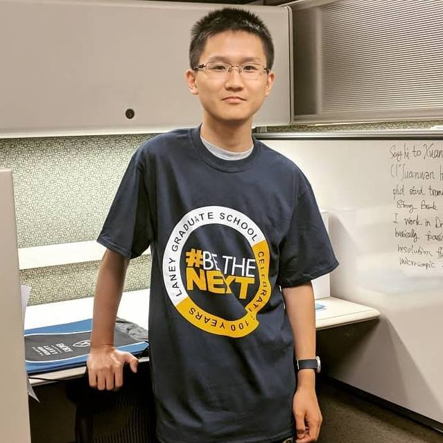

Xuanwen Hua, Ph.D. (華 軒文)
Assistant Professor | Goda Lab
SiRIUS Institute of Medical Research
School of Medicine, Tohoku University
| School of Medicine Building 5, 2-1 Seiryomachi, Aoba Ward, Sendai, Miyagi 980-0872, Japan |
|
| Academic: -- TBD -- | |
| Alternative: xwghua@outlook.com | |
Xuanwen Hua received his B.S. degree in Applied Physics from the University of Science and Technology of China (USTC) in 2016, where he studied biophysics in the School of Physical Sciences and conducted research on simultaneous 3D tracking and fluorescence imaging of microparticle and microorganism motility in Dr. Junhua Yuan's Lab for Biological Physics. He began his Ph.D. studies in Biomedical Engineering at Stony Brook University in 2016 before transferring to the Joint Ph.D. Program of the Wallace H. Coulter Department of Biomedical Engineering at Georgia Institute of Technology and Emory University in 2018, working in Dr. Shu Jia's Lab for Systems Biophotonics. His doctoral dissertation, "Toward Light-Field Interrogation of Cell Biology: Physics, Computation, and Systems," was defended in November 2023, and he received his Ph.D. degree in May 2024.
Following his doctoral studies, Xuanwen joined Georgia Institute of Technology as a Postdoctoral Fellow in Biomedical Engineering (2024-2026). He is joining Tohoku University as an Assistant Professor, where he will be part of the SiRIUS Institute of Medical Research and collaborate closely with Dr. Keisuke Goda and the Goda Group at the University of Tokyo and Tohoku University.
Xuanwen's research lies at the intersection of advanced systems biophotonics and biomedical studies. His work focuses on the development of novel optical imaging systems for biomedical research — including wavefront engineering, high-resolution light-field microscopy, 3D super-resolution imaging, and 3D imaging flow cytometry — enabling volumetric, high-throughput high-resolution single-cell observation and multiparametric analysis. He integrates deep learning and computational optics with photonic systems to push the boundaries of imaging speed, resolution, and multi-dimensional multimodal capability. His broader interests span quantum imaging, meta-photonics, and optical artificial intelligence for resolving innovative biological and medical problems.
Chosen as the Cover of Science Advances [VOLUME 9|ISSUE 35|1 SEP 2023]
Xuanwen has been listed as the second author of a paper (Mandracchia, et al.)"Fast and Accurate sCMOS Noise Correction for Fluorescence Microscopy."Nature Communications. (Jan.3rd,2020)
Nature Methods highlight: Say goodbye to sCMOS noise